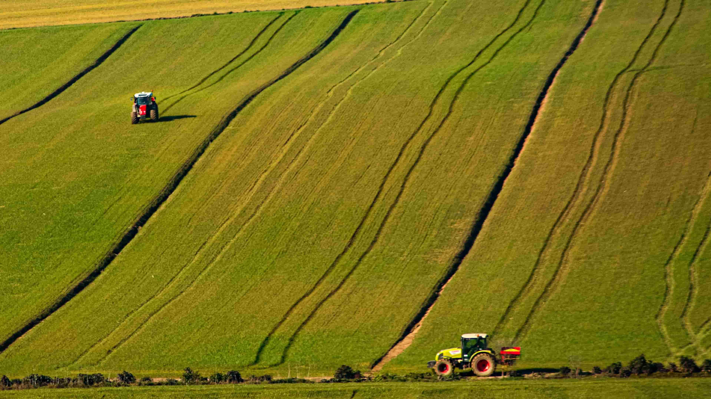
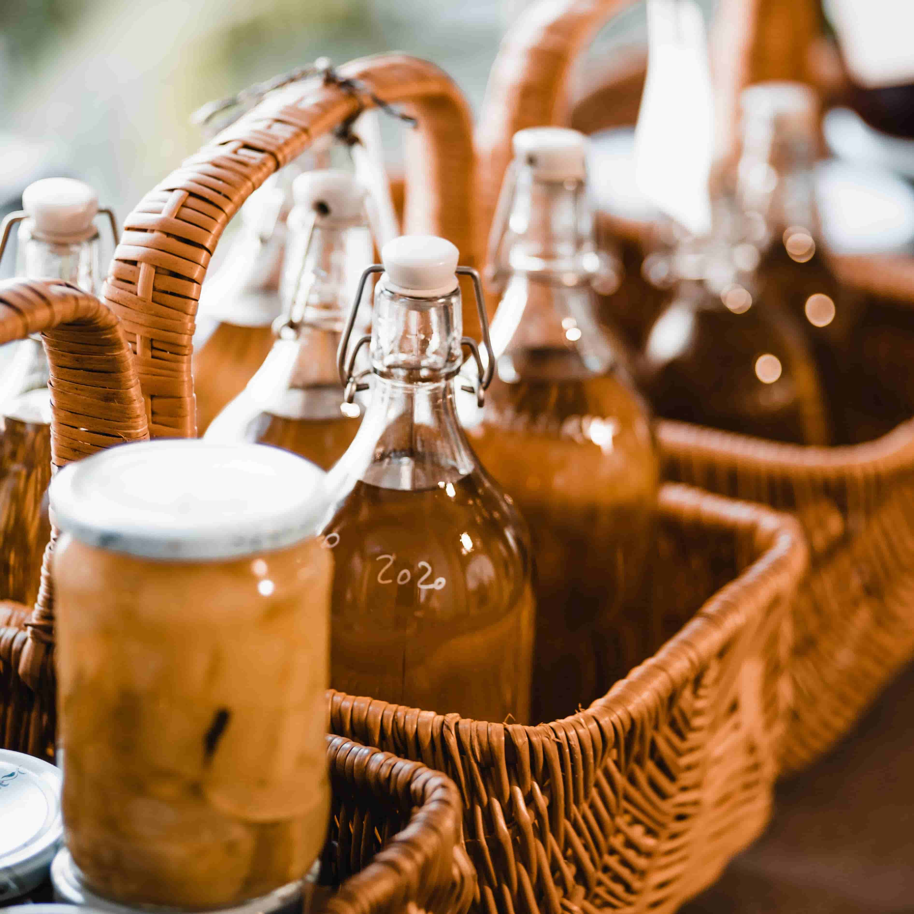
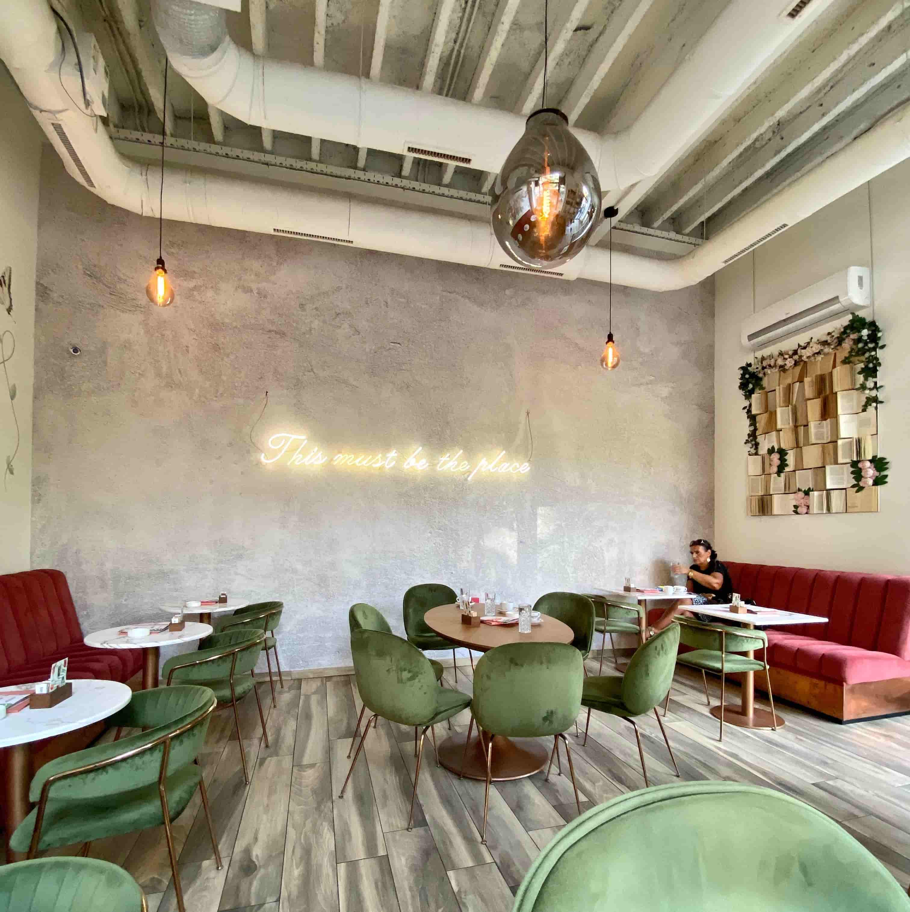

Welcome to Abbington Farm
At Abbington Farm, we offer a range of fresh, locally produced food and drink. Our farm produce includes free-range eggs, home-reared pork, and seasonal vegetables grown in our garden.
We also stock a selection of jams, preserves, honey, marmalade, and handmade chocolates, alongside freshly baked breads, cakes, and award-winning pies with fillings such as apricot and blackberry.
To accompany your food, we offer locally sourced fruit juices, wines, beers, and ciders. We look forward to welcoming you to Abbington Farm Shop and helping you discover the best local produce.
 |
ShopFresh farm produce, including free-range eggs, pork, and seasonal vegetables. Local jams, preserves, honey, chocolates, breads, cakes, and award-winning pies. |
CaféRelax with a selection of homemade meals, snacks, and hot drinks. Our most popular items include fresh eggs, milk, yougrth, cheese, bread and cakes. |
 |
ExploreExplore our farm and the beautiful surrounding countryside. We also offer fun activities such as hayrides, pumpkin picking and a corn maze. |